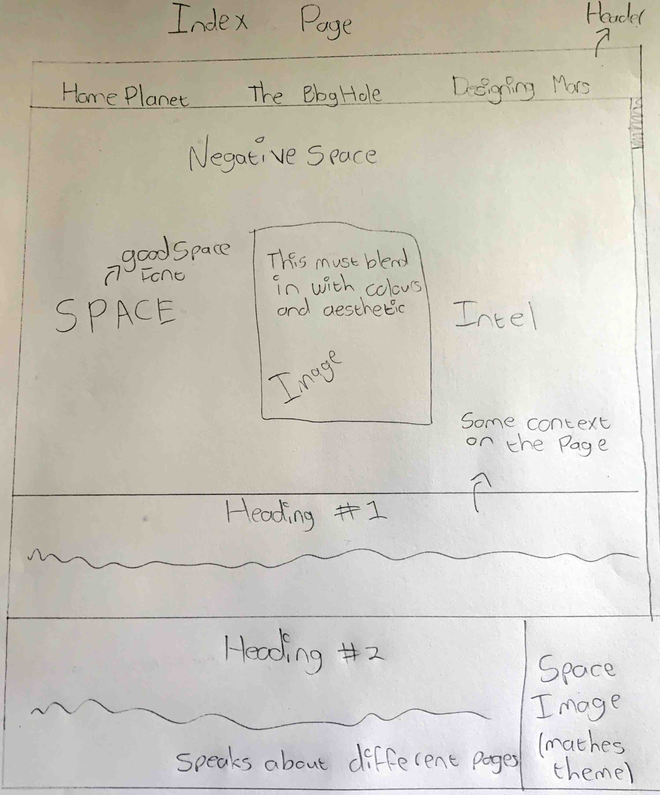
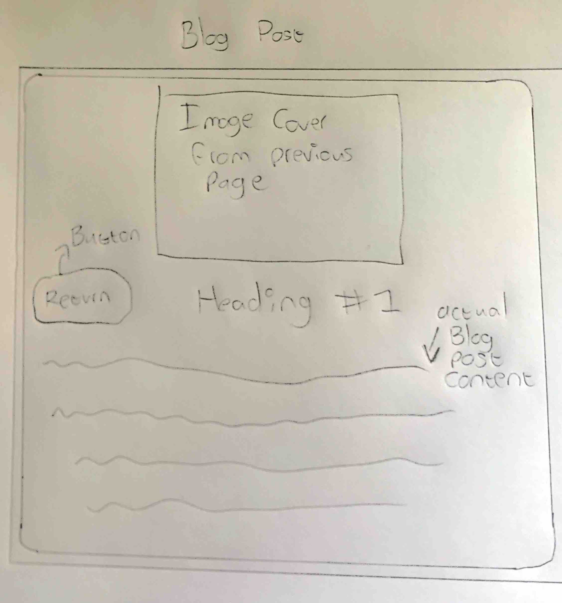
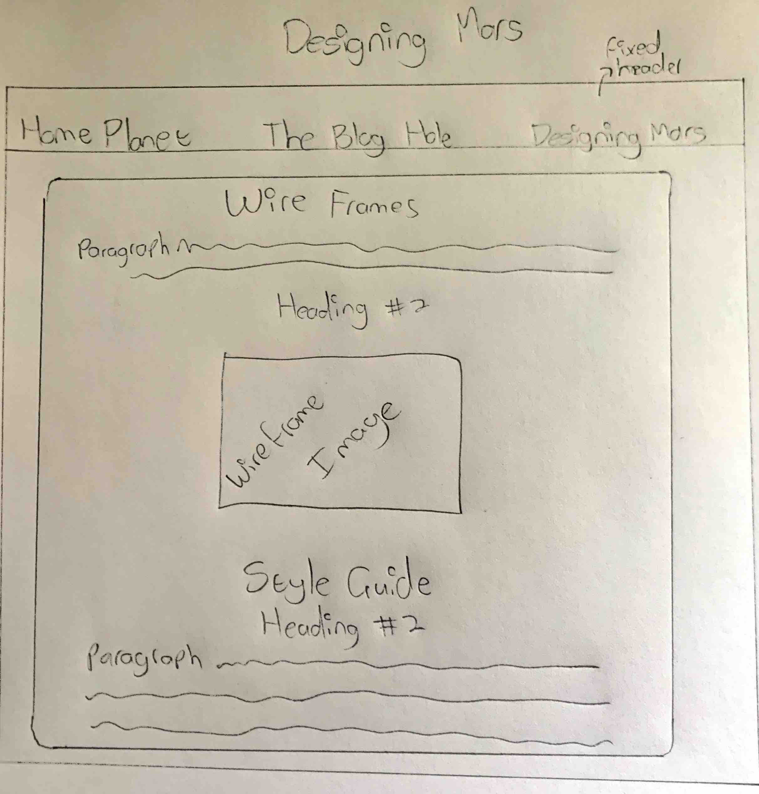

WiresFrames
My first WireFrame is the index or homepage. I wanted it to feel very sleek and simplistic or minimalistic in its design. I also wanted the all of my pages t be easy on they eye and satisfying to look at, overall making users want to explore the website further.
Index WifreFrame

The Blog Hole WireFrame
This page was inspired by a minimalistic black blog page that I stumbled upon. It has an interesting format where the latest blog is at the top of the page and the rest are below it and are smaller but users can still interacct with them.

The Blog 1 WireFrame
This is another simple page that contains the actual blog post with an image at the top that represents whatever the blog is about. There is also a return button that returns the user to the blogs page.

The Design Page Wirerame
This page contains all of the content for WireFrames, Style Guides and overall just the development of this website and the Design Choices made throughout the dvelopment of this website.

Style Guide
The overall aesthetic of my website was dark and minimalistic. I decided to go for a dark theme because it is much easier on the eyes and contrasts well with white. The backgrounds used in my website are all black or grey
whilst the text is either white or gold. The white text stands out and contrasts the backgrounds which makes all of my content much more readible. The gold text is saved for buttons or navigation so that the user knows where the are at all times.
Gold also helps my website convey a sharp "tuxedo" and sleek feeling so that the website feels very professional. The Font's vary according to their needs.
Since my website is minimalist but also themed around space I felt that the home page font called "Entanglement" is a great way to convey the complexities of space and to keep within my theme but also gives a sleek simple feeling since the text is surrounded with negative space.
Following this is the layout of my website. There is not an overloading amount of panels or content on the main pages. They also use a display of block to keep is simple which ties in with the idea of the website.